Francesca Del Buono f.delbuono@student.tudelft.nl |
Miquel Rull Trinidad m.rulltrinidad@student.tudelft.nl |
Milosz Jezierski m.m.jezierski@student.tudelft.nl |
Shlok Deshmukh s.s.deshmukh@student.tudelft.nl |
CS4240 Deep Learning (Reproducibility project, April 2024)
Introduction
Until now, many well-known approaches for processing videos have treated them simply as sequences of frames. With the rapidly developing field of deep learning a new approach has been formulated to represent a video with a neural network. This new approach, developed by Chen et al. (2021), could help with many video related tasks. In this blog, such a novel technique called NeRV will be analysed. The main idea behind NeRV is to provide subsequent frame indices to the network which should then recreate frames the model was previously fitted on.
The whole analysis of NeRV is divided into several parts. Initially, the "Understanding" section delves into the core concepts underlying the NeRV architecture. Following this, the “Reproducing NeRV” section addresses reproduced results regarding Table 2 of Chen et al. (2021). After this, the NeRV is implemented on a new dataset Cholec80 (Twinanda et al., 2017) and its performance on this data is evaluated while changing the number of epochs. Additionally, a case of training with every second frame is included. In the Hyperparameters Check section, the focus is put on analysing the effect of changing particular parameters, like the learning rate and Multi-Layer Perceptron (MLP) on the overall performance of NeRV. Subsequently, in the New Algorithm Variant section, the NeRV is evaluated by modifying its parts, like for instance activation functions. Finally,, the usefulness of cosine learning rate scheduler in NeRV is analysed and concluded with a discussion.
NeRV, Neural Representations for Videos, presents a novel approach to representing videos as implicit functions encoded within neural networks. This new representation addresses the challenges of efficiently encoding and decoding videos while still maintaining high-quality resolution.
In the NeRV architecture, each video can be represented as V = {vt}t = 1T, with vt= fθ(t), where the input is the frame index and the output is the RGB image vt (Chen et al., 2021). The encoding function is parameterized by a deep neural network, allowing it to map each input timestamp to the corresponding RGB frame.
To enhance the network’s ability to capture high-frequency variations in video data, NeRV employs an input embedding technique called Positional Encoding. This mapping function helps improve the network’s performance in fitting data with complex temporal dynamics.
The NeRV architecture, which is shown in the pictures below, utilises a combination of Multilayer Perceptrons (MLPs) and Convolutional Networks (ConvNets) to efficiently output RGB images. By stacking multiple NeRV blocks and incorporating techniques like PixelShuffle for upscaling, NeRV achieves effective reconstruction while managing parameters efficiently.
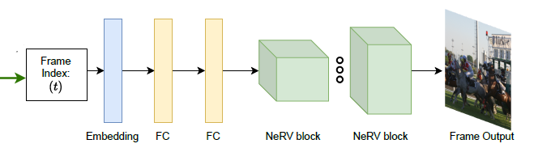 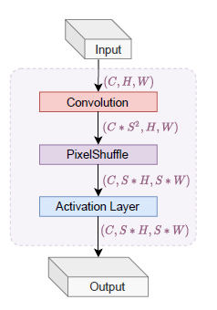
Figure 1: NeRV Architecture (Chen et al. ,2021)
In terms of optimization, NeRV adopts a combination of L1 and Structural Similarity Index (SSIM) loss functions to train the network. This loss function balances pixel-wise differences between predictor and ground-truth frames, ensuring accurate reconstruction while preserving structural similarity. Furthermore, NeRV explores model compression techniques to reduce the computational and storage overhead associated with video representation. Techniques such as model pruning, weight quantization, and entropy encoding are employed to achieve significant reductions in model size without compromising reconstruction quality.
Overall, NeRV exploits advanced architectural designs and optimization strategies to offer a promising solution for representing videos as implicit functions within neural networks, showcasing its potential to streamline video processing tasks and facilitate efficient video representation and compression.
Using the code from the GitHub provided by the authors of the paper (Chen et al., 2021), we trained the network on the “Big Buck Bunny” sequence from the scikit-video, to reproduce the results for the NeRV-S from the paper. We utilised the same hyperparameters, structure, optimizer function, and learning rate as the authors did. Our NeRV architecture consisted of 5 NeRV blocks, with upscale factors of 5, 2, 2, 2, 2, since the video we were working with has a resolution of 720p. The default settings for input embedding and loss objective were b = 1.25, l = 80, and α = 0.7, respectively, and the model was trained for 1200 epochs.
| Model | PSNR | Decoding FPS | GPU |
|---|---|---|---|
| original NeRV-S | 34.21 | 54.5 | NVIDIA RTX2080ti |
| our NeRV-S | 34.03 | 46.36 | Kaggle’s GPU P100 |
| 34.03 | 21.93 | Kaggle’s GPU T4 x2 |
Table 1: original NeRV-S vs our NeRV-S
Table 1 compares the results of the original NeRV-S with our results. The resulting PSNR is really close to the one in Table 2 of the paper while the decoding FPS speed was lower. Two of us used the less powerful GPU from Kaggle which resulted in around seven hours of training and less than half the speed of the original, while the other two used the other GPU that Kaggle offers which resulted in a much faster training time, around four and a half hours, and a closer decoding FPS speed.
For the visualisation purposes the newly trained NeRV-S model with GPU P100 was used to produce images for the bunny data. Below in Figures 2 and 3 the obtained visualisations for frames 80 and 110 can be observed together with the corresponding ground truth frames. These specific frames were chosen on purpose to observe some of the NeRV’s characteristics regarding video dynamics.
Frame 80 presents a static moment where the bunny movements in the neighbouring frames are very limited. Thanks to this, although a small decrease in quality can be observed, the bunny prediction remains really similar to the ground truth.
On the other hand frame 110 presents a very dynamic situation where the bunny moves his head very rapidly. This results in a very interesting phenomenon where the bunny ears seem to disappear since their position cannot be very well retrieved by the neural network. Thus, when trying to save a video with the NeRV method, it should be noted that one of the NeRV’s disadvantages is processing dynamic moments, which may result in a loss of information in the video output.
Figure 2: Ground truth (left) (Chen et al., 2021) and prediction (right) of NeRV-S (1200 epochs) for bunny frame 80.
Figure 3: Ground truth (left) (Chen et al., 2021) and prediction (right) of NeRV-S (1200 epochs) for bunny frame 110.
After getting NeRV to work on the “Big Bunny Dataset” we tested it on a novel dataset. We used the first 100 frames from the 13th video of the Cholec80 Dataset made by the CAMMA Research Group (Twinanda et al., 2017). This dataset is made of video of cholecystectomy surgeries.
We first tried training it for only 300 epochs with the same hyperparameters as in the section above. After around an hour of training, this resulted in a PSNR of 31.53 and a MS-SSIM of 0.9563. The visualisation for frame 10 of the NeRV-S on Cholec80 can be seen in Figure 4.
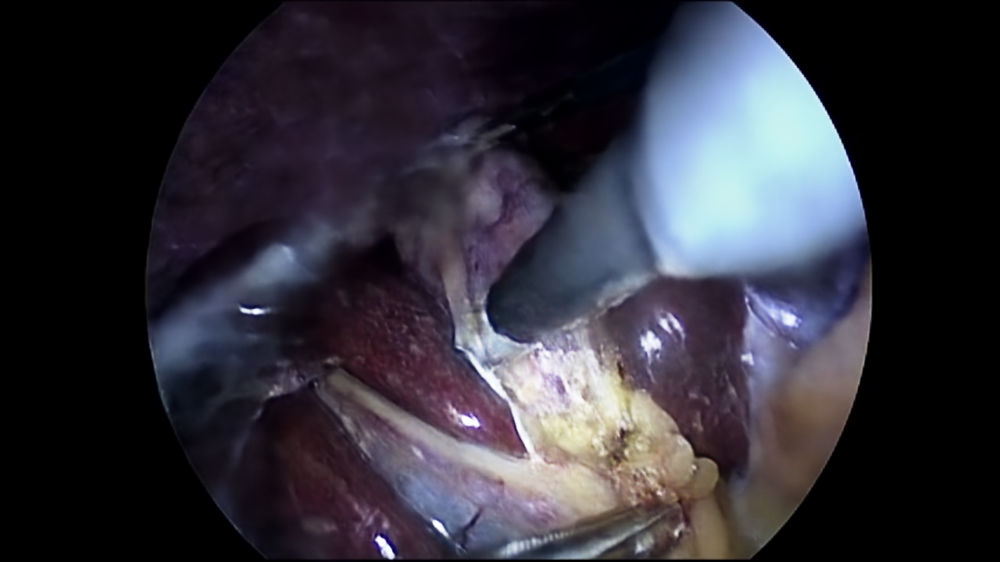
Figure 4: Ground truth (left) (Twinanda et al., 2017) and prediction (right) of NeRV-S (300 epochs) for frame 10.
Although the visualisation for 300 epochs is already capable of presenting numerous details, the NeRV-S model was also trained for 1200 epochs. With this next model, it is possible to compare how much the quality of the image can be improved based on the number of epochs. The visualisation for 1200 epochs is presented in Figure 5.
Figure 5: Ground truth (left) (Twinanda et al., 2017) and prediction (right) of NeRV-S (1200 epochs) for frame 10.
Using the comparison between Figures 4 and 5, it can be stated that the image quality improved with the increased number of epochs. However, this difference can be best observed with great zoom. For this reason, Figure 6 has been provided, where a small glare on one of the tools in the left part of the image is examined. Based on this figure the comparison between ground truth and NeRV-S model for 1200 and 300 epochs can be visualised.
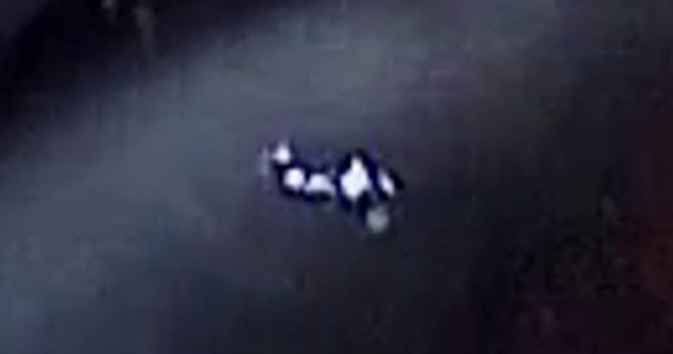
Figure 6: Ground truth (left) (Twinanda et al., 2017), prediction of NeRV-S with 1200 epochs (middle) and with 300 epochs (right) for a small glare of frame 10.
The subsequent step in the analysis of NeRV-S model was to train it using every second frame. This means that the analysed Cholec80 video was initially extended to 200 frames and was later compressed to 100 using every second frame. After the training, as it was expected, the final PSNR value for this case was lower compared to the subsequent 100 frames scenario. Nevertheless, the quality of the output images still remained very close to the ground truth as seen in Figure 7.
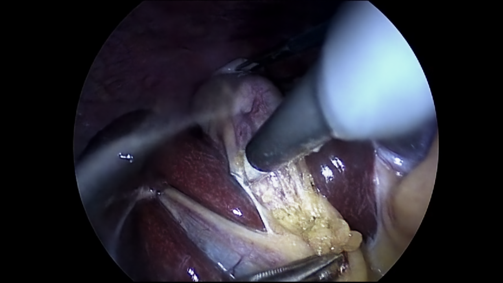
Figure 7: Ground truth (left) (Twinanda et al., 2017) and prediction (right) of NeRV-S (1200 epochs, trained on every second frame) for frame 10.
Now both scenarios for NeRV-S (1200 epochs) of subsequent frames and every second frame training were analysed quantitatively. This was done by creating graphs for PSNR and MS-SSIM with values stated after every 50 epochs. These graphs can be seen in Figure 8 and Figure 9.
For PSNR evaluation it can be observed that in both scenarios the trend seems to be very similar. The first epochs provide a very steep increase in PSNR reaching about 64% of the final value already after 50 epochs. However, after around 800 epochs this increasing tendency significantly slows down and at 1200 epochs reaches a plateau. Additionally, as it could have been expected, the model trained with every second frame performs slightly worse. It is likely that the increased difficulty arises from greater disparities among subsequent input frames, posing challenges for the model to learn as effectively as before.
Finally, it should be mentioned that these PSNR values may be affected by the fact that a part of each frame (outside the camera circle) remains always black. Thus, it can be easy to reconstruct this image area with almost 100% accuracy.
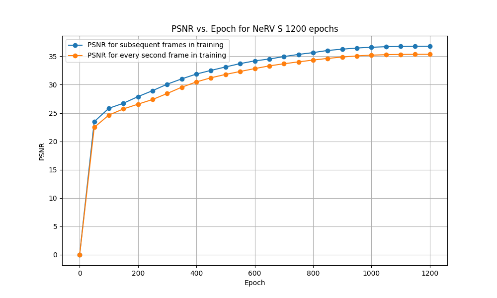
Figure 8: PSNR comparison between NeRV-S trained on subsequent frames and every second frame for 1200 epochs.
For MS-SSIM the trend is very similar to the PSNR case. The steep increase after the first epochs is followed by a plateau but this time strating much earlier, already around 400 epochs. Also the differences between the two scenarios seem to converge which was not the case in the PSNR graph. Given that MS-SSIM aims to better capture human perception, we would anticipate that both scenarios would generate images that are nearly indistinguishable from one another. Looking back again at Figure 7 and 5 this indeed seems to be the case.
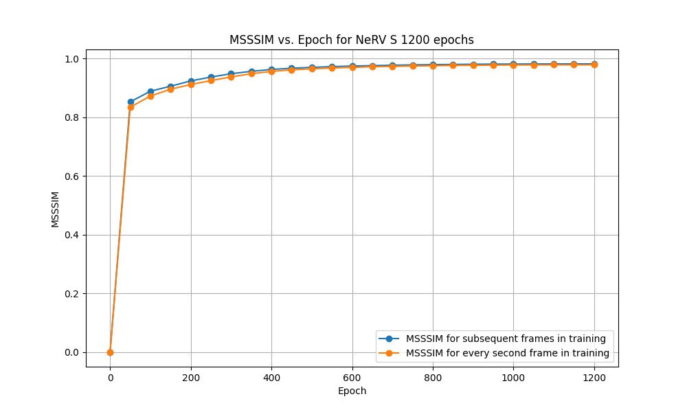
Figure 9: MS-SSIM comparison between NeRV-S trained on subsequent frames and every second frame for 1200 epochs.
Epochs
We observe a significant improvement in performance when training for higher epochs. In the figure below, after 300 epochs the PSNR is 30.5, 32.7 after 600 and 33.98 after 1200. However, performance starts to saturate around 1000 epochs and we don’t see any significant improvement later. We recommend using 300 epochs for quick prototyping and testing if one is short on time, as the MS-SSIM scores do not show much improvement post this mark (0.94 at 300 epochs, 0.97 at 1200).
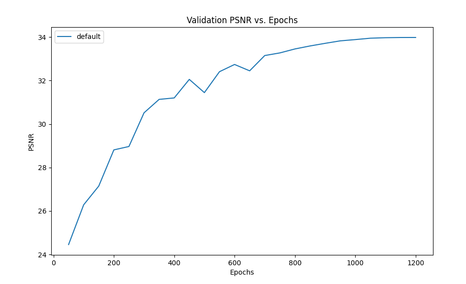
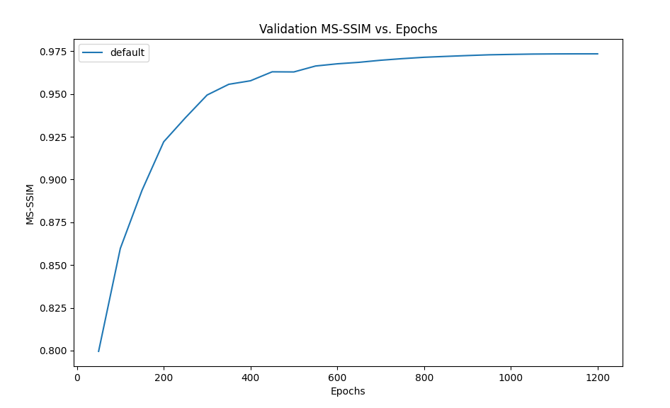
Figure 10: Performance with longer epochs
Learning rate
One of the hyperparameters we attempted to study was the learning rate. We changed the default learning rate from 0.0005 to 0.001 and 0.0002 for 1200 epochs while using cosine annealing. The performance is measured using two metrics - MS-SSIM and PSNR.
MS-SSIM stands for Multi Scale Structural similarity index, it’s used for image quality assessment.
PSNR stands for Peak Signal to noise ratio - it's used to compare the quality of the original image to the quality of a compressed image.
As shown in figure 11, increasing the default learning rate from 0.0005 to 0.001, does not have a notable effect on our metrics when we train for 1200 epochs. However, when left to train for fewer epochs ~300, training with a higher learning rate results in better MS-SSIM and doesn’t have a notable difference in PSNR. We reckon, this is due to the fundamental difference in these metrics. MS-SSIM is more sensitive to structural information, like humans, unlike PSNR which is a pixel-based metric and doesn’t account for spatial position of pixels in an image.
One thing to note here is that the learning rate is not constant, it is scheduled by cosine annealing, which steeply increases the rate to peak value and gradually decreases to 0. So the performance is not surprising as a steep increase in learning rate will lead to more rapid change in weights while the cosine scheduler keeps it from diverging, which yields better results with smaller epochs compared to a constant learning rate, more on this later.
When we decrease the learning rate to 0.0002, the final MS-SSIM indicates slightly worse performance after training for 1200 epochs in both training and validation. It seems this learning rate is not high enough to cause a significant change in weights.
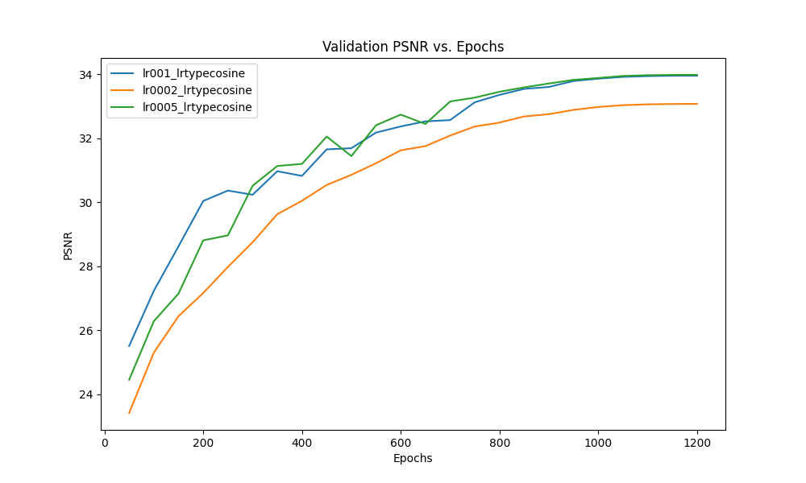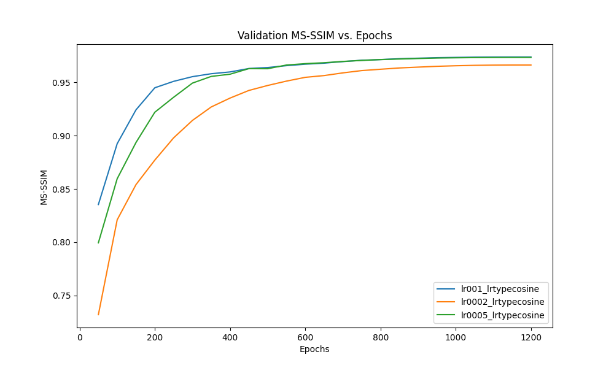
Figure 11: Comparison of performance at different learning rates
MLP dimension
Varying the Multi-Layer Perceptron serves as a way to check how sensitive the model is to the parameter count. It is expected that lower dimensional models perform worse, but they may be more efficient in size and train time.
In Table 2, The findings for NeRV with different numbers of parameters have been trained on 1200 epochs.
| fc_hw_dim | Parameters | PSNR | ms-ssim | Train time [H:min] | Time/epoch [s] |
|---|---|---|---|---|---|
| 9_16_14 | 2.17M | 32.28 | 0.9617 | 4:41 | 14.01 |
| 9_16_26 (NeRV_S) | 3.20M | 34.03 | 0.9730 | 4:42 | 14.00 |
| 9_16_36 | 4.11M | 35.40 | 0.9807 | 4:42 | 14.05 |
| 9_16_56 (NeRV_M) | 6.28M | 38.00 | 0.9892 | 4:42 | 14.14 |
Table 2: MLP dimensionality vs performance and train time
PSNR vs number of parameters
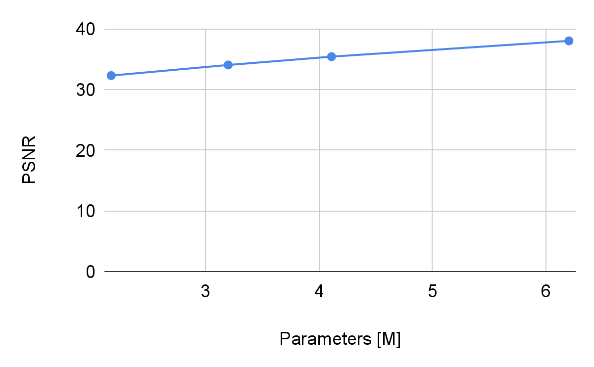
Figure 12: PSNR vs number of parameters for NeRV.
As expected, lower parameter counts result in lower PSNR and ms-ssim results. Although it seems to lower linearly, the curve is expected to be similar to a logarithm. More runs with even lower dimensionality should be attempted to check this hypothesis.
It has been observed that the train time remains similar on all models. This is unexpected, as the bigger models are several times larger, and are expected to take more time to train. Instead, only the VRAM required changes between models, with a very small % extra train time. This behavior is indicative that something unrelated to the MLP is taking the majority of the train time. A way to check this is by calculating the cumulative time of the different blocks in the network.
Activation function
To understand the differences that the activation function makes, we tried to train the model on the “Big Bunny Dataset” with the same hyperparameters as in the reproduction section but for a shortened time, 300 epochs, changing the activation functions. We tried ReLU, SiLU and softplus.
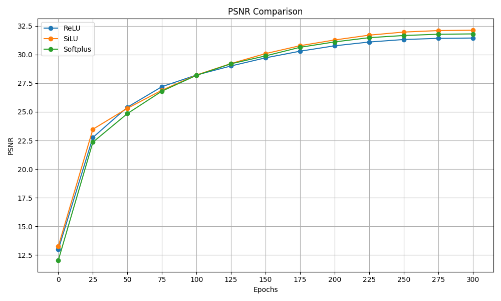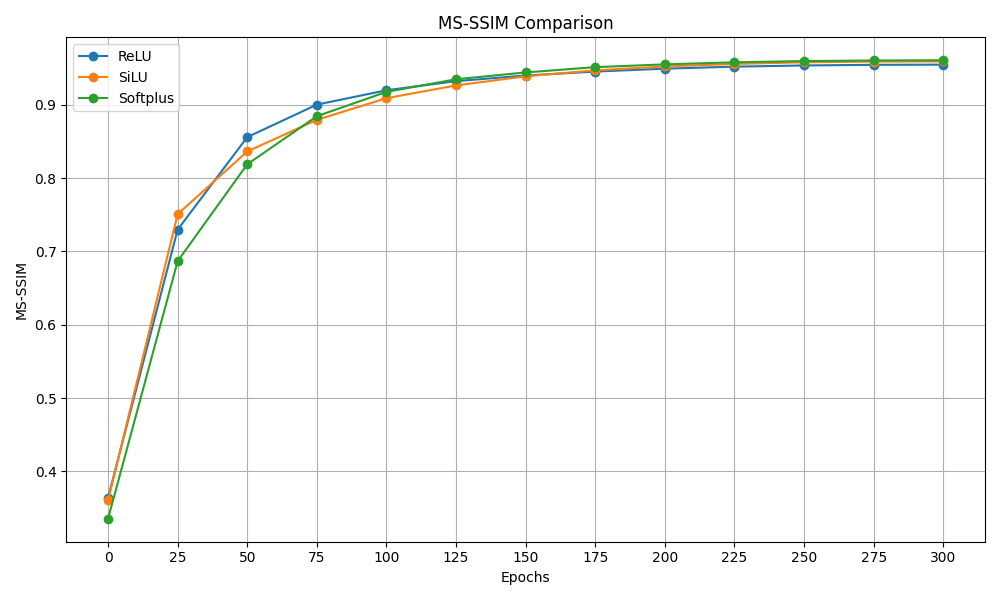
Figure 13: PSNR and MS-SSIM activation functions comparison
As we can see from the graphs above the activation function does not have a big influence on the results for both the PSNR and the MS-SSIM. The only difference is that for the SiLU the PSNR at the end of the training is slightly higher which makes us understand why the authors decided to use that activation function.
Loss function
By default, NeRV uses a combination of an L1 and SSID loss function, called "Fusion6" internally. The paper does not go in-depth on why this is the case. Therefore, it is interesting to check the differences between using L1 on the loss vs not using it. On figure 14, we plot the PSNR vs epochs of both approaches.
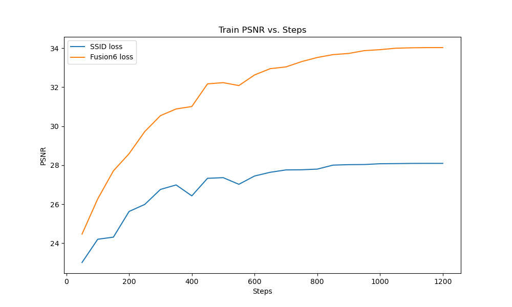
Figure 14: PSNR vs epochs (Steps) for SSID loss vs Fusion 6 loss.
| Loss function | PSNR | MS-SSIM |
|---|---|---|
| Fusion 6 | 34.03 | 0.9730 |
| SSIM | 28.09 | 0.9663 |
Table 3: PSNR and ms-ssim for the different loss functions.
Cosine scheduled vs constant learning rate
We compared performance by replacing the cosine scheduler with a constant learning rate for 1200 epochs. The paper originally uses cosine learning rate scheduler, which oscillates between 0 and the default learning rate (0.0005) allowing the network to move out of a local minima and find better weights for convergence. However, the scheduler goes through only one oscillation, perhaps to get the best of both exploration and exploitation, while avoiding overshooting as we get closer to convergence. Both the metrics converge at a higher value in case of cosine scheduler compared to a constant learning rate.
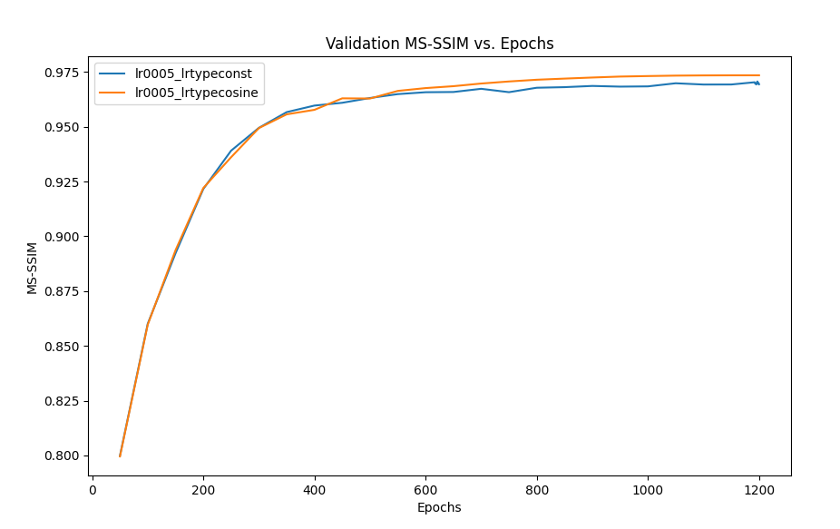
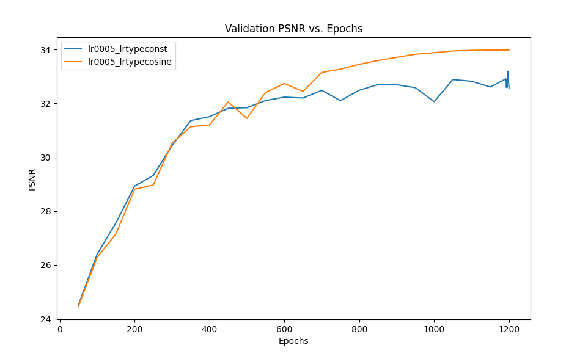
Figure 15: Performance comparison between constant and scheduled learning rate
When reproducing the paper, we found the PSNR numbers from the original paper to be quite accurate with our results (34.03 PSNR) being only 0.5% lower. The runs between the team members on the reproduction yield practically the same results (+- 0.03 PSNR), therefore the model converges quite consistently to the same values. When using NeRV-S with the Cholec80 data, we have seen that the results are remarkably good, even when only training every second frame. Only when zooming in substantially, the differences between the 300 and the 1200 epochs are visible.
After the model was verified to correspond with the paper, the team started tweaking the hyperparameters. First, the learning rate was appropriately chosen, as a higher learning rate did not change the result on longer epochs, while a smaller one would yield worse results. When changing the MLP however, something interesting was found. While the model accuracy changed as expected, the train time remained roughly the same, even with triple the model parameters. This behaviour was not expected, as we were studying the small model due to fear of long train times. However, there seems to be something else other than the parameters that are taking the majority of the train time.
Then, the algorithm architecture was tweaked to explore how the model reacts. First, we found that the activation function did not have an impact on the model accuracy. However, the loss function, when changed to use only SSID instead of both L1 and SSID, performed significantly worse.
Moving forward, it would be interesting to keep exploring the behaviour of NeRV or its newer variants, like HNeRV. This could be done by, for example:
Training the model on a very high number of frames, and checking the performance.
Exploring the performance between resolutions.
Building complete curves for the MLP dimensionality, especially when the performance degrades due to low dimensionality
Investigating what is taking the majority of the time when training, since the MLP doesn't seem to be it.
Building an L1 vs SSIM graph to find the optimal ratio of losses.
References
Chen, H., He, B., Wang, H., Ren, Y., Lim, S.-N., & Shrivastava, A. (2021). NeRV: Neural Representations for Videos. [Preprint]. arXiv:2110.13903.
Twinanda, A. P., Shehata, S., Mutter, D., Marescaux, J., de Mathelin, M., & Padoy, N. (2017). EndoNet: A Deep Architecture for Recognition Tasks on Laparoscopic Videos. IEEE Transactions on Medical Imaging.